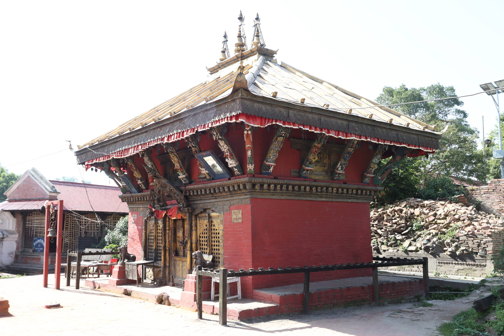
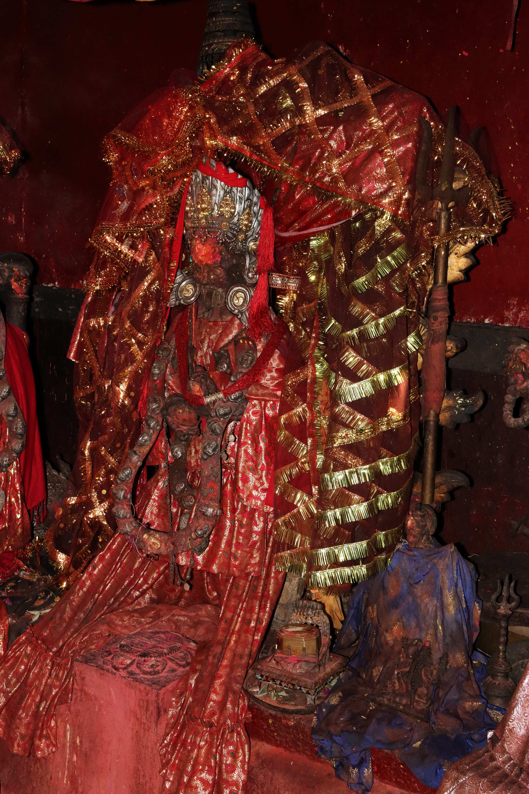

Monument - Rājarājeśvarī Mandira || राजराजेश्वरी मन्दिर || PPK0717
Primary Image
Rājarājeśvarī Mandira, front façade, view from N; photo by Yogesh Budathoki; 2023-06-03
Monument Details
Primary Description
The Rājarājeśvarī Temple, situated south of the Paśupatinātha Mandira on the banks of the Bagmati River, underwent renovation in 1408 CE (NS 528) during the joint rule of King Jayadharma Malla and Jayajyoti Malla. The temple is associated with Rājarājeśvarī, another name for the deity Śrīvidyā Tripurasundarī, (D. Ja.Ba.Rā VS 2036, p. 103) who is one of the nine protective deities surrounding the Paśupatinātha Temple (Hasrat 1970, p. 25). According to the Nepālamāhātmya, the darśana (blessed view) of Rājarājeśvarī is believed to bring ecstasy and end poverty for devotees. The Jhā Brahmins worship Rājarājeśvarī as their lineage deity.
According to local belief, Rājarājeśvarī has an interesting origin story associated with Bhaktapur. It is said that she expressed a desire to leave Bhaktapur and explore the world beyond. However, the priest of the temple agreed to her request on the condition that she must return before sunrise. If she failed to do so, she would be bound to stay wherever she was at that moment. Unfortunately, Rājarājeśvarī was unable to make it back to Bhaktapur before sunrise. As a result, she had to remain in the Paśupatikṣetra, situated on the banks of the Bāgmatī River (Michaels 1994, p. 110).
The temple is oriented towards the north and features a single roof with gilded sheets and three golden finials. The struts supporting the roof's eaves contain statues of Bhairava and Aṣṭamātṛkā deities. The lower part of the struts is adorned with carvings depicting erotic figures and scenes of daily life. Instead of the usual lion faces or mythical rams with a beak (kuṃsuru), the beam ends (dhaliṃmvaḥ) of the temple are carved with skulls. Gilded covers are installed on the door and windows. The entrance to the sanctum was once adorned with an ornamented arch (toraṇa) featuring a statue of Gaṇeśa, but it was stolen around 2000 CE and has not been replaced.
Inside the sanctum, twelve clay statues of various deities are enshrined, including eight power goddesses, two Bhairava statues, Gaṇeśa, and a five-faced śivaliṅga known as Pañcamukhī Mahādeva. The main deity of the temple, revered as Rājarājeśvarī, is symbolically represented by an eight-petalled stone maṇḍala in front of Dakṣiṇakālī. This maṇḍala is a representation of the śrīyantra, a mystical diagram used in the worship of Tripurasundarī. The temple is also referred to as the Navadurgā Mandira, denoting its association with the nine power goddesses (Durgā).
The original construction of the temple lacks historical records. According to the Bhāṣāvaṃśāvalī, Rājarājeśvarī came from the Kāmarūpa Pīṭha and resided in a stone form south of the Paśupatinātha Temple after Jayavāgīśvarī (PPK1222) came to the Devapattana area from the Mansarovar lake region during the Dvāpara Yuga (N. Pauḍela VS 2020, p. 35; Hasrat 1970, p. 25). King Śivadevavarman invoked various pīṭhas, including Rājyeśvarī (Rājarājeśvarī) (Nepālikabhūpavaṃśāvalī 12.139). An inscription at the temple indicates that it underwent renovation in 1408 CE (NS 528) by Devarāja Bhaṭṭa during the joint rule of King Jayadharma Malla and Jayajyoti Malla. He also offered necklaces and animal mounts to the goddesses. The script on the inscription contains a few letters that are not in use in Nepal, believed to be in Telugu or ancient Kannada, suggesting a donor from South India (G. Ṭaṇḍana VS 2053, p. 206). In the 19th century, Jitajaṅga Rāṇā installed gilded covers for the temple's entrance, toraṇa, and windows in 1882 CE (VS 1939) and offered finials and gilded sheets for the temple's roof in 1884 CE (VS 1941).
Daily rituals and a lamp-offering ceremony are conducted by a Karmācārya priest. A duck is sacrificed for Rājarājeśvarī every full moon day, organized by the Paśupati Guṭhī Gośvārā. Every twelve years, the clay statues inside the sanctum are refurbished, a tradition initiated by King Ratna Malla after his victory over the Ṭhakurīs of Nuvākoṭa. The temple also hosts the mask dance of Navadurgā from Bhaktapur, exhibited in the Navadurgā courtyard annually on the 9th day of the bright fortnight of Mārgaśīrṣa. In the twelfth year, the dance troupe from Bhaktapur is replaced by a similar mask dance from Harisiddhi (M. Lāmichāne VS 2079, p. 80). This mask dance is exhibited due to the Devapattana area's historical significance as the ancient capital of Nepālamaṇḍala (P. Śreṣṭha VS 2060, p. 73). An endowed plot of land supports the expenses for the exhibition of the Navadurgā dance from Bhaktapur (Guṭhī Saṃsthāna VS 2071, p. 38).
Description in Nepali
राजा जयधर्म मल्ल र जयज्योति मल्लको संयुक्त शासनकालमा नेसं ५२८ (सन् १४०८) मा देवराज भट्टद्वारा जीर्णोद्धार गरिएको यस मन्दिरलाई भव्यता प्रदान गर्ने काममा जङ्गबहादुर राणाका छोरा जीतजङ्ग राणाको ठूलो हात छ ।
पशुपतिनाथको मन्दिरदेखि दक्षिणपट्टि बागमती किनारमा राजराजेश्वरी मन्दिर अवस्थित छ । मन्दिरको नामबाटै वरपर रहेको घाटलाई राजेश्वरी घाट भनिएको हो । श्रीविद्या त्रिपुरासुन्दरीको अर्को नाम राजराजेश्वरी हो (D. Ja.Ba.Rā VS 2036, p.103) । पशुपतिनाथलाई आवरणको रूपमा घेरेर बसेका नौजना देवीमध्ये राजराजेश्वरी पनि एक हो (Hasrat 1970, p.25) । नेपाल माहात्म्यमा त्रिपुराबाट आएकी राजराजेश्वरीको दर्शन गर्नाले दरिद्रता हटी सुखी हुनेछ भनिएको छ (Acharya 1992, p.22, अध्याय १, श्लोक ५५) । झा ब्राह्मणहरू राजराजेश्वरीदेवीलाई आफ्नो कुलदेवता मान्छन् । उत्तराभिमुख यस मन्दिरमा एक तहको छाना राखिएको छ र छानामा सुनको मोलम्बा लगाइएको छ । छानामा तीनवटा सुवर्ण गजूर राखिएका छन् । छानाको भार थाम्न राखिएका टुँडालहरूमा भैरव, मातृका कुँदिएका छन् । ती टुँडालका तल्लो भागमा कामकला लगायत बाजा बजाइरहेका, खर्पन बोकिरहेका दृष्यहरू अङ्कित छन् । सामान्यतया मन्दिका धलिंख्वा:हरूमा सिंहको टाउको राखिने भएपनि यस मन्दिरमा कङ्गालको टाउको राखिएका छन् । मन्दिरको झ्याल-ढोकाहरूमा सुनको मोलम्बा लगाइएको छ । मन्दिरको प्रवेशद्वारमाथि गणेश अङ्कित धातुको तोरण राखिएको थियो, तर विसं २०५६-२०५७ (सन् १९९९-२०००) तिर तोरण चोरी भएपछि अहिले खाली नै रहेको छ । गर्भगृहभित्र १२ वटा देवदेवीका माटाका मूर्तिहरू स्थापना गरिएका छन् । ती १२ वटा मूर्तिमध्ये अष्टमातृका, दुई भैरव, एक गणेश र एक पञ्चमुखी शिव स्थापना गरिएका छन् । अष्टमातृकामध्ये दक्षिणकालीको अगाडिपट्टि भुइँमा ढुङ्गाको मण्डप बनाइएको छ । त्यसै मण्डपमा साधना गरी श्रीयन्त्र स्थापना गरिएको छ र त्यसै श्रीयन्त्रलाई राजराजेश्वरी मानी पूजा गरिन्छ । यसप्रकार यस मन्दिरमा राजराजेश्वरीदेवी र अष्टमातृका गरी नौजना देवी स्थापना गरिएका छन् । त्यसैले यस मन्दिरलाई नवदुर्गा मन्दिर पनि भनिन्छ ।
यी देवीको स्थापनाबारे कुनै ऐतिहासिक प्रमाण पाइएको छैन । भाषावंशावलीअनुसार द्वापर युगमा जयवागीश्वरी (PPK1222) मानसरोवरदेखि शिला नदी तरेर देवपत्तनमा विराजमान भएपछि राजराजेश्वरी पनि कामरूप पीठदेखि आई पशुपतिको दक्षिणमा शिला रूपमा विराजमान भएकी थिइन् (N. Pauḍela VS 2020, p.35; Hasrat 1970, p.25) । गुणकामदेवपछि राजा भएका राजा शिवदेववर्म्मनले अन्य पीठका साथमा राजेश्वरी (राजराजेश्वरी) पीठ पनि जगाएका थिए (Nepālikabhūpavaṃśāvalī 2016, 12.139) । मन्दिरमा राखिएको शिलापत्रअनुसार नेसं ५२८ (सन् १४०८) मा मन्दिरको जीर्णोद्धार गरिएको थियो । राजा जयधर्म मल्ल र जयज्योति मल्लको संयुक्त शासनकालमा नारायण भट्टका छोरा देवराज भट्टले जीर्ण भएको राजराजेश्वरीको मन्दिर जीर्णोद्धार गरी मन्दिरभित्रका देवीहरूलाई वाहन र गलामा कण्ठी चढाई ध्वजारोहण क्रिया गरी स्थापना गरेका थिए । उक्त शिलालेखको १० औं हरफमा नेपालमा प्रचलनमा नरहेको लिपि प्रयोग गरी केही शब्दहरू कुँदिएका छन् । त्यसमा कुँदिएको लिपिलाई तेलगु लिपि मानी मन्दिर जीर्णोद्धार गर्ने व्यक्ति दक्षिण भारतका थिए भन्ने अनुमान गरिएको छ (G. Ṭaṇḍana VS 2053, p.206) । अर्को धारणाअनुसार शिलालेखमा कुँदिएको उक्त लिपि प्राचीन कन्नड लिपि हो (Yogeśarāja VS 2057, pp.11) । मन्दिरको श्रीवृद्धि गर्ने काममा जङ्गबहादुर राणाका माहिला छोरा जीतजङ्ग राणाको महत्त्वपूर्ण देन छ । उनले विसं १९३१ (सन् १८७४) मा जीतजङ्गप्रकाशेश्वर मन्दिर निर्माण गरी त्यसको नियमित पूजाआजाको व्यवस्थापनको लागि ३०६ रोपनी जग्गा गुठी राखिदिएका थिए । ती खेतको आयस्ताको केही अंश राजराजेश्वरी मन्दिरको नित्यपूजा लगायत संक्रान्ति, श्रावण र माघमा हुने पूजाको लागि खर्च गर्ने व्यवस्थामा पनि गरिएको थियो । उनले विसं १९३९ (सन् १८८२) मा मन्दिरमा सुवर्ण प्रवेशद्वार, तोरण र झ्याल चढाएका थिए । उनैले विसं १९४१ (सन् १८८४) मा मन्दिरमा सुवर्णको छाना, गजूर चढाएका थिए ।
यस मन्दिरमा कर्माचार्य थरका मानिसले पुजारीको काम गरिरहेका छन् । उनले बिहान नित्यपूजा गरी बेलुकी आरती दिने गर्छन् । उनलाई पशुपति गुठी गोश्वाराले वार्षिक ९ मुरी धान पारिश्रमिक दिने गरेको छ । पहिले धान नै दिने गरेकोमा अहिले ९ मुरी धान बराबरको नगद नै पारिश्रमिक दिने गरेको छ । प्रत्येक महिनाको पूर्णिमाको दिनमा राजराजेश्वरीदेवीलाई हाँस बलि दिइन्छ । बलि दिने हाँसको बन्दोबस्त पशुपति गुठी गोश्वाराले गर्दछ । प्रत्येक १२ वर्षमा एकपल्ट मन्दिरको गर्भगृहभित्र रहेका १२ वटा माटाका मूर्तिहरू मर्मत गरी रंगरोगन गरिन्छ । काठमाडौंका राजा रत्न मल्लले नुवाकोटका ठकुरीहरूलाई युद्धमा जितेपछि राजराजेश्वरीका मूर्तिमा प्रत्येक १२/१२ वर्षमा चित्रकारी कर्म गर्ने परम्परा चलाएका थिए (D. Lamsāla VS 2023, p.52) । भक्तपुरबाट मंसीर शुक्ल ९ को दिनमा देवपत्तनमा नवदुर्गा नाच ल्याई नचाइन्छ । नेपालमण्डलको पुरानो राजधानी देवपत्तनमा रहेकोले सम्मान स्वरूप देवपत्तनमा ल्याएर नवदुर्गा गणको नाच देखाउने गरिएको हो (P. Śreṣṭha VS 2060, p.73) । लगातार ११ वर्षसम्म भक्तपुरबाट नवदुर्गा गणको नाच देवपत्तनमा नचाइन्छ । तर १२ औं वर्षमा ललितपुरबाट हरिसिद्धिको नाच देवपत्तनमा ल्याएर नचाउँदा त्यस वर्ष भक्तपुरबाट नवदुर्गा नाच ल्याइँदैन (M. Lāmichāne VS 2079, p.80) । भक्तपुरबाट नवदुर्गा ल्याउँदा पूजा गर्नको लागि एक रोपनी जग्गा गुठी राखिएको छ (Guṭhī Saṃsthāna VS 2071, p.38) ।
Images after 2015
Rājarājeśvarī Mandira, door to the courtyard, view from E; photo by Yogesh Budathoki; 2023-06-07
Rājarājeśvarī Mandira, front façade, view from N; photo by Yogesh Budathoki; 2023-06-03
Rājarājeśvarī Mandira, aerial view of the front façade, view from N; photo by Yogesh Budathoki; 2023-06-03
Rājarājeśvarī Mandira, close-up view of front façade, view from N; photo by Yogesh Budathoki; 2023-06-07
Rājarājeśvarī Mandira, pinnacle, view from N; photo by Yogesh Budathoki; 2023-06-03
Rājarājeśvarī Mandira, toraṇa above the entrance door, view from N; photo by Yogesh Budathoki; 2023-06-03
Rājarājeśvarī Mandira, door to the sanctum, view from N; photo by Yogesh Budathoki; 2023-06-03
Rājarājeśvarī Mandira, struts of the northern facade, compiled image, view from N; photo by Yogesh Budathoki; 2023-06-03
Rājarājeśvarī Mandira, view from NE; photo by Yogesh Budathoki; 2023-06-03
Rājarājeśvarī Mandira, eastern façade, view from E; photo by Yogesh Budathoki; 2023-06-03
Rājarājeśvarī Mandira, struts of the eastern façade, compiled image, view from E; photo by Yogesh Budathoki; 2023-06-03
Rājarājeśvarī Mandira, view from SE; photo by Yogesh Budathoki; 2023-06-03
Rājarājeśvarī Mandira, view from SW; photo by Yogesh Budathoki; 2023-06-03
Rājarājeśvarī Mandira, struts of the southern façade, compiled image, view from S; photo by Yogesh Budathoki; 2023-06-03
Rājarājeśvarī Mandira, western façade, view from W; photo by Yogesh Budathoki; 2023-06-03
Rājarājeśvarī Mandira, struts of the western façade, compiled image, view from W; photo by Yogesh Budathoki; 2023-06-03

Rājarājeśvarī Mandira, view from NW; photo by Yogesh Budathoki; 2023-06-03
Rājarājeśvarī Mandira, blind window on the western façade, view from W; photo by Yogesh Budathoki; 2023-06-03
Rājarājeśvarī Mandira, upper part of Rājarājeśvari and Jitjangprakasesvara Mandira, view from SW; photo by Yogesh Budathoki; 2023-06-03
Rājarājeśvarī Mandira, front façade, view from N; photo by Bharat Maharjan; 2021-07-06
Images before 2015
Rājarājeśvarī Mandira, front façade, view from N; photo by Axel Michaels; courtesy of Axel Michaels; 2006-07-23; free access – no reuse; source: Axel Michaels
Rājarājeśvarī Mandira, front façade, view from N; photo by Axel Michaels; courtesy of Axel Michaels; ca.1981; free access – no reuse; source: Axel Michaels
Rājarājeśvarī Mandira, front façade, view from N; photo by Carl Pruscha; 1973–1974; courtesy of Carl Pruscha; free access – no reuse; source: Carl Pruscha, Kathmandu Valley, 1975, vol. I, p. 146
Location
Province number
District
Municipality, Village council
Heritage focus area
City quarter, tol
3
Kathmandu
Kathmandu Metropolitan City
Pashupati heritage focus area, Deopatan
Rājeśvarī Ghāṭa, Paśupati
Typology
Monument type
Main deity in the sanctum
Religion
Tiered temple
Rājarājeśvarī
Shakta
Alternative Names
Navadurgā Mandira
Objects
Rājarājeśvarī Mandira, Rājarājeśvarī, view from NE; photo by Yogesh Budathoki; 2023-06-08
Rājarājeśvarī Mandira, statues of the deity in the sanctum (eastern side), view from NW; photo by Yogesh Budathoki; 2023-06-08
Rājarājeśvarī Mandira, statues of the deity in the sanctum (southern side), view from N; photo by Yogesh Budathoki; 2023-06-07
Rājarājeśvarī Mandira, statues of the deity in the sanctum (western side), view from NE; photo by Yogesh Budathoki; 2023-06-08
Rājarājeśvarī Mandira, Pañcamukhī Mahādeva, view from NW; photo by Yogesh Budathoki; 2023-06-07
Rājarājeśvarī Mandira, Vaṭuka Bhairava, view from NW; photo by Yogesh Budathoki; 2023-06-07
Rājarājeśvarī Mandira, Brahmāyaṇī, view from NW; photo by Yogesh Budathoki; 2023-06-07
Rājarājeśvarī Mandira, Māheśvarī, view from N; photo by Yogesh Budathoki; 2023-06-07
Rājarājeśvarī Mandira, Kaumārī, view from N; photo by Yogesh Budathoki; 2023-06-07
Rājarājeśvarī Mandira, Vaiṣṇavī, view from N; photo by Yogesh Budathoki; 2023-06-07
Rājarājeśvarī Mandira, Vārāhī, view from N; photo by Yogesh Budathoki; 2023-06-07
Rājarājeśvarī Mandira, Indrāyaṇī, view from N; photo by Yogesh Budathoki; 2023-06-07
Rājarājeśvarī Mandira, Mahālakṣmī, view from N; photo by Yogesh Budathoki; 2023-06-07
Rājarājeśvarī Mandira, Bhairava, view from NE; photo by Yogesh Budathoki; 2023-06-08

Rājarājeśvarī Mandira, Dakṣiṇakālī, view from NE; photo by Yogesh Budathoki; 2023-06-07
Rājarājeśvarī Mandira, Gaṇeśa, view from NE; photo by Yogesh Budathoki; 2023-06-07
Rājarājeśvarī Mandira, guardian lion (A), view from NE; photo by Yogesh Budathoki; 2023-06-03
Rājarājeśvarī Mandira, guardian lion (A), view from NE; photo by Yogesh Budathoki; 2023-06-03
Rājarājeśvarī Mandira, guardian lion (B), view from NW; photo by Yogesh Budathoki; 2023-06-03
Rājarājeśvarī Mandira, guardian lion (B), view from NW; photo by Yogesh Budathoki; 2023-06-03
Rājarājeśvarī Mandira, maṇḍapa, view from S; photo by Yogesh Budathoki; 2023-06-08
Rājarājeśvarī Mandira, yajñakuṇḍa, view from S; photo by Yogesh Budathoki; 2023-06-03
History
Image:
Legend:
Rājarājeśvarī Mandira, stone inscription from NS 528 attached to the left of the entrance, view from N; photo by Yogesh Budathoki; 2023-06-03
Rājarājeśvarī Mandira, inscription from VS 1939 on the north eaves board, pt. 1, view from N; photo by Yogesh Budathoki; 2023-06-03
Rājarājeśvarī Mandira, inscription from VS 1939 on the north eaves board, pt. 2, view from N; photo by Yogesh Budathoki; 2023-06-03
Rājarājeśvarī Mandira, inscription from VS 1941 on the west, south and east eaves board, compiled image, view from W, W, S, S, S, E, E; photo by Yogesh Budathoki; 2023-06-03
Date:
Date (BCE/CE): 1408
Period: Early Malla Period: (13th-1482)
Year (ŚS/NS/VS): NS 528
Nepali month: Māgha
Pakṣa: Dark fortnight
Tithi: 8
Date (BCE/CE): 1882
Period: Early Rana Period (1846-1885)
Year (ŚS/NS/VS): VS 1939
Nepali month: Bhādra (Bhadau)
Pakṣa: Dark fortnight
Tithi: 8
Date (BCE/CE): 1884
Period: Early Rana Period (1846-1885)
Year (ŚS/NS/VS): VS 1941
Nepali month: Kārttika (Kārtika)
Pakṣa: Dark fortnight
Tithi: 8
Event name and description:
Event name: Renovation of the temple
Description: During the joint rule of King Jayadharma Malla and Jayajyoti Malla, Devarāja Bhaṭṭa renovated the temple that was in poor condition then. Son of Nārāyaṇa Bhaṭṭa, Devarāja also offered necklaces and animal mounts to the goddesses in the sanctum.
Event name: Offering golden entrance gate, toraṇa and window
Description: Son of Jaṅga Bāhādura Rāṇā and then Western Commanding General Jītajaṅga Rāṇā installed gilded covers for the temple’s entrance, toraṇa, and windows.
Event name: Offering Golden roof and pinnacle
Description: Together with his wife Rudrakumārīdevī and the family, Western Commanding General Jītajaṅga offered finial and gilded sheets for the temple’s roof.
Sources and references:
Sources: Stone inscription from NS 528 embedded to the east of the entrance of the temple. H: 39 cm, W: 35 cm. Regmi 1966, pp.44-45; D. Vajrācārya VS 2068, pp.218-219; Yogeśarāja VS 2057, pp.10-11.
Sources: Inscription from VS 1939 on the north eaves board of the temple. G. Ṭaṇḍana VS 2056, p.594. Inscription measurement is not accessible.
Sources: Inscription from VS 1941 on the west, south and east eaves board of the temple. G. Ṭaṇḍana VS 2056, p.598. Inscription measurement is not accessible.
Commentary:
Anthropology
Social and Religious Activities
Activity:
Description:
Reference source:
Daily worship (nityapūjā)
A Karmācārya priest performs daily rituals as per the tantric tradition in the mornings and a lamp-offering (āratī) ceremony in the evenings. The Paśupati Guṭhī Gośvārā, an office responsible for the management of various trusts of the Paśupati area, provides him with nine murīs of paddy for his priestly services. These days (June 2023), he is paid an amount equivalent to the market price of nine murīs of paddy.
Priest of the temple from a Karmācārya caste, male, age 64
Sacrifice of duck
A duck is sacrificed for Rājarājeśvarī every full moon day. The Paśupati Guṭhī Gośvārā arranges for the sacrificial duck. Although the duck is offered to Rājarājeśvarī, the sacrifice is made to a stone maṇḍala (PPK0717-016) worshipped as Bhairava at the temple premises.
Priest of the temple from a Karmācārya caste, male, age 64. G. Ṭaṇḍana VS 2053, p.579.
Kalevara Hilegu Pūjā
Once every 12 years, the clay statues in the sanctum are refurbished. The locals of the Devapattana area have kept the tradition alive with personal contributions as there is no separate trust in existence to carry out the refurbishment.
Priest of the temple from a Karmācārya caste, male, age 64
Worship during Dīpaṅkhā Yātrā
In the course of the Dīpaṅkhā Yātrā procession, Rājarājeśvarī is also worshipped among other deities. The Dīpaṅkhā Yātrā is a procession organized when five auspicious astrological aspects coincide on the same day. The procession is organized on a rare occasion when all of the first day of a solar month (saṃlhū), the full moon day of a lunar month, the presence of the Revatī nakṣatra (the 27th lunar mansion), and Harṣaṇa yoga (the 14th astrological conjunction considered to be highly auspicious) fall on a Sunday.
Michaels 2013, p.335
Worship during Bāgamatī Yātrā
During the Bagmati procession organized every year in the month of Vaiśākha, Rājarājeśvarī is also worshipped.
M. Thāpā VS 2077, p.537
Pavitrārohaṇa
The pavitrārohaṇa worship is performed on Gaṇeśa and Pañcamukhī Mahādeva every year on the 14th of the dark fortnight of Śrāvaṇa. Raw threads are considered sacred and are offered to deities during the pavitrārohaṇa worship. The worship is carried out from the income of the land endowed by Jītajaṅga Rāṇā while he built the Jītajaṅgaprakāśeśvara Mandira.
Priest of the temple from a Karmācārya caste, male, age 64
Worship during Daśain
Throughout the Dasaĩ festival, scores of devotees throng the temple. Rājarājeśvarī receives special worship from the esoteric room (āgamaghara) of Paśupatinātha on the 2nd of the bright fortnight of Āśvina. On the 8th of the fortnight, the Bhaṇḍārīs and Bhaṭṭa priests of Paśupatinātha perform the kālarātrī worship here. On this day, the Rājopādhyāya priests from Patan offer a sacrifice of a he-goat at the temple. The next day, the Kausī Toṣākhānā office sacrifices another he-goat here.
Priest of the temple from a Karmācārya caste, male, age 64. M. Thāpā VS 2077, p.538
Special worship
Special tantric worship is performed here every year on the 8th of the bright fortnight of Caitra.
Priest of the temple from a Karmācārya caste, male, age 64
Navadurgā dance
The mask dance of Navadurgā from Bhaktapur is exhibited in the Navadurgā courtyard north of the temple every year on the 9th of the bright fortnight of Mārgaśīrṣa. The Navadurgā dance begins on Gathāṃmugaḥ Caḥrhay, the 14th of the dark fortnight of Śrāvaṇa, in Bhaktapur and concludes on Bhalabhala Aṣṭamī, the 8th of the dark fortnight of Āṣāḍha. Throughout this period, the dance troupe from Bhaktapur travel to various towns and cities like Ṭokhā, Capalī, Tupyā, Sāṃgā, Sankhu, Thimi, Nagadeśa, Cā̃gu, Banepā, Nālā, Khaḍapu, Caukoṭa, Dhulikhel, Panauti, etc. The first exhibition of the dance outside Bhaktapur takes place in the Devapattana area. All the deities of the dance troupe first receive special worship at the meadow of Siphala near Paśupati. Then they go around the Devapattana area for another round of worship before visiting the Paśupatinātha Mandira. The dance troupe then comes to the Rājarājeśvarī Mandira and exhibits the Navadurgā dance at the Navadurgā courtyard. In the 12th year, however, the dance troupe from Bhaktapur skips its exhibition here to make way for a similar mask dance from Harisiddhi. The mask dance of Navadurgā from Bhaktapur is exhibited here, as the Devapattana area used to be the ancient capital of Nepālamaṇḍala.
P. Śreṣṭha VS 2060, p.73; M. Lāmichāne VS 2079, p.80
Images
Rājarājeśvarī Mandira, daily ritual, view from N; photo by Yogesh Budathoki; 2023-06-07
Architectural Details
Maps, Plans and Drawings
Rājarājeśvarī Mandira; location map by Anil Basukala; 2023-06-22
Rājarājeśvarī Mandira; site plan by Bibek Basukala; 2023-06-22
Rājarājeśvarī Mandira; floor plan by Bibek Basukala; 2023-06-22
Measurements
Basic measurements of the monument:
Number of storeys: 1
Length: 540 cm
Depth: 350 cm
Height: c. 615 cm
Monument diameter: 0 cm
Monument shape: Rectangular
Roofs:
Type: Hip roof
Roofing: Flat sheets
Number of struts: 24
Walls & Bricks:
Thickness of main wall: 60 cm
Type of bricks: dāciaḥpā (veneer brick)
Column, capitals and lintels measurement:
Forms of columns: None
Columns Width: Depth: Height:
Cakula Width: Depth: Height:
Capital Width: Depth: Height:
Lintel Width: Depth: Height:
Windows, doors and bays:
Number of wood-carved windows: 4
Number of doors: 1
Number of bays (front): 3
Number of bays (sides): 0
Peculiarities: None
Bases, plinths and platforms:
Number of plinths: 1
Base plinth Width: 688 cm Depth: 85 cm Height: 20 cm
Top plinth Width: 0 cm Depth: 0 cm Height: 0 cm
Profile at base: No profile
Edge at platform: Stone
Platform's floor: Tiles
Condition Assessment:
Monument assesment:Good (very few light surface damages, renovated or repaired)
Identified threats:
Past Interventions:
Editorial Details
Documentation Team
Editor(s)
Descriptions, iconography, social and religious activities
Photography after 2015
Drawings and architectural data
Historical events, inscriptions
Axel Michaels
Ravi Shakya, Axel Michaels
Yogesh Budathoki
Anil Basukala, Bijay Basukala, Bibek Basukala
Rajan Khatiwoda, Ravi Shakya
References
Acharya, Jayaraj, ed. Nepāla-Māhātmya of the Skandapurāṇa: Legends on the Sacred Places and Deities of Nepal. Jaipur, New Delhi: Nirala Publications, 1992.
Bajracharya, Manik, and Axel Michaels, eds. Nepālikabhūpavaṃśāvalī: History of the Kings of Nepal: A Buddhist Chronicle. Vol. 1–2. 3 vols. Kathmandu: Himal Books, 2016.
Michaels, Axel. Die Reisen der Götter: Der nepalische Paśupatinātha-Tempel und sein rituelles Umfeld. Bonn: VGH Wissenschaftsverlag, 1994.
Michaels, Axel. Śiva in Trouble: Festivals and Rituals at the Paśupatinātha Temple of Deopatan (Nepal). South Asia Research. Oxford; New York: Oxford University Press, 2008.
Michaels, Axel. “From Syncretism to Transculturality: The Dīpaṅkara Procession in the Kathmandu Valley.” In South Asian Festivals on the Move, edited by Ute Hüsken and Axel Michaels, 317–42. Wiesbaden: Harrassowitz, 2013.
Regmi, D. R., ed. Medieval Nepal: Source Materials for the History and Cultures of Nepal 740-1768 A.D. (Part III). 1st ed. Calcutta: Firma K. L. Mukhopadhyay, 1966.